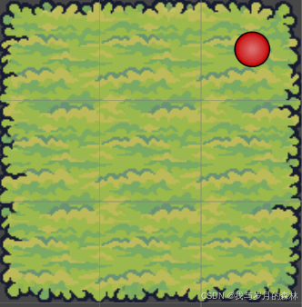
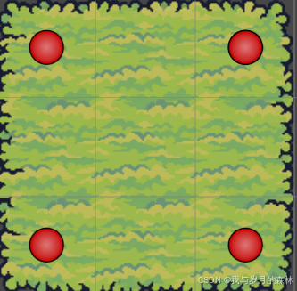
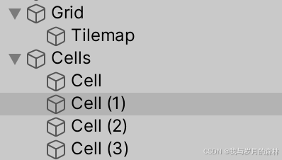
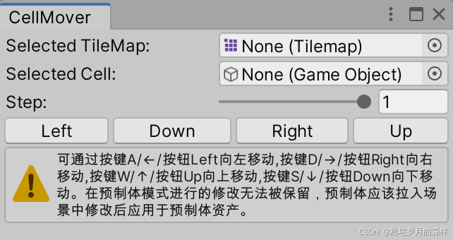
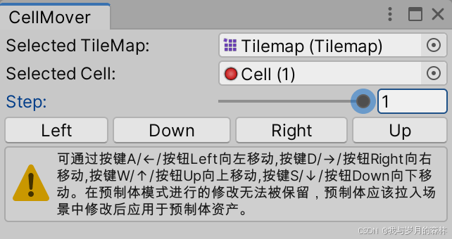

Unity3D瓦片地图辅助定位工具
前言
该工具用于TileMap的瓦片辅助定位，通过键盘或鼠标按瓦片尺寸0到1的比例作为单次移动值移动定位点游戏对象。当采用定位点游戏对象映射瓦片时，可使用该工具来移动定位点游戏对象，在新版本Unity3D的TileMap编辑器中可使用GameObject Brush快速给瓦片添加定位点游戏对象，而旧版本中该工具更适用，这仅限于瓦片地图固定设计的情景，而对于代码动态生成的随机瓦片地图使用Unity3D中TileMap相关API来完成定位更合适。
适用情景
- 瓦片地图设计固定，且采用定位点游戏对象映射瓦片，包括但不限于映射瓦片坐标或瓦片相对位置的特殊处理。
- 需要在瓦片地图特定位置进行特殊处理，例如在指定位置生成某种建筑等。
优点和缺点
| 优点 | 缺点 |
|---|---|
| 1. 避免使用代码计算瓦片位置； 2.对于瓦片的特殊处理相较于代码处理的成本和难度更低。 |
1. 设计固定，无法应对高随机性的瓦片地图，仅可在编辑器构建瓦片地图时使用； 2.需要手动维护定位点游戏对象，对于瓦片数量过多或复杂程度过高的瓦片地图不适用。 |
使用示例
我们用该工具辅助定位瓦片地图的四个顶点瓦片，如图所示：

未定位前

定位后
创建定位点游戏对象（上图中的红点）：

打开顶部菜单中的Tool —- CellMover窗口：

选择或拖拽相关Tilemap组件给 Selected TileMap ，选择和拖拽定位点游戏对象给 Selected Cell ，自行调节或输入单次移动的步长 Step ，步长以一个瓦片单元的尺寸为基准：

移动方式看上图中的提示
注意事项
如果需要修改预制体中的对象名称，请先移动到场景中，完成后应用修改到预制体。
资源下载
免责声明：由于本文内容未经过正规和严格的测试，可能存在错误，因此造成的损失均由使用者自行承担，对本文内容复制、下载、参考等引用行为即默认悉知并同意该声明。
系列文章
本博客所有文章除特别声明外，均采用 CC BY-NC-SA 4.0 许可协议。转载请注明来源 我与岁月的森林的博客！
评论